Six corner-sharing networks of solid clusters in two space-filling lattices, one rule, and its icosahedral exception
Both are built on the cubic cells of the Euclid–Kepler–Pacioli (EKP) cell (cube edge 2, cells at integer points, "even" and "odd" by the parity of x + y + z), so the even cells form a face-centred cubic lattice.
DICTO Jewel. Take the EKP cell's regular dodecahedron (Euclid's roofs on the cube) and carve away the stella octangulas of its six face-neighbouring cells. What remains is a solid of volume exactly 12 whose surface keeps 12 rhombi of Penrose's thick 72°/108° shape, one on each cube edge in the dodecahedron's own face planes (the "windows"), walled by 48 triangles in the stellas' planes. Stella–Jewel Lattice: Jewels on the even cells and stella octangulas (volume 4) on the odd cells fill space exactly, 3 : 1 by volume.
Sunstar Lattice. Regular dodecahedra on the even cells are the densest lattice packing of the dodecahedron; the holes between them are Dogstars (George W. Hart's dodecahedron stellation 8, 1996). Dodecahedra and Dogstars fill space; the Dogstar is credited to Hart and to Hans Walser.
A configuration is a cluster of even cells (one solid piece, each touching pair meeting face to face) and a lattice of anchors where clusters are placed. Each hull works in both lattices:
| Hull | Pieces | Anchors | Neighbours | Notes |
|---|---|---|---|---|
| Rhombohedron | 8, at the corners of the FCC primitive cell, its odd cell inside | BCC | 8 | perfect Kagome: every piece in exactly two blocks, none left over; a quarter of the odd cells sealed inside; 8⅓ Jewels |
| Cuboctahedron, hollow | 12 round an even cell | FCC | 12 | a cage with a central hole |
| Cuboctahedron, solid | 13 | FCC | 12 | the periodic twin of the 13-dodecahedron cluster |
| Cube | 14, the FCC conventional cell round an odd cell | BCC | 8 | many single pieces and open pockets; the least Kagome-like |
| Rhombic dodecahedron | 19 even + 14 odd | BCC with second neighbours | 14 | no single pieces |
| Octahedron | 6 round an odd cell, with its stella (or Dogstar) inside | simple cubic | 6 | the corner-sharing octahedra of the perovskite structure |
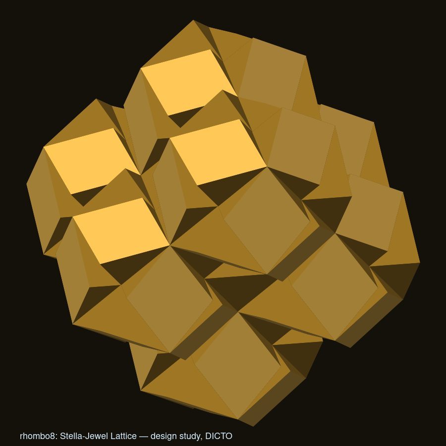
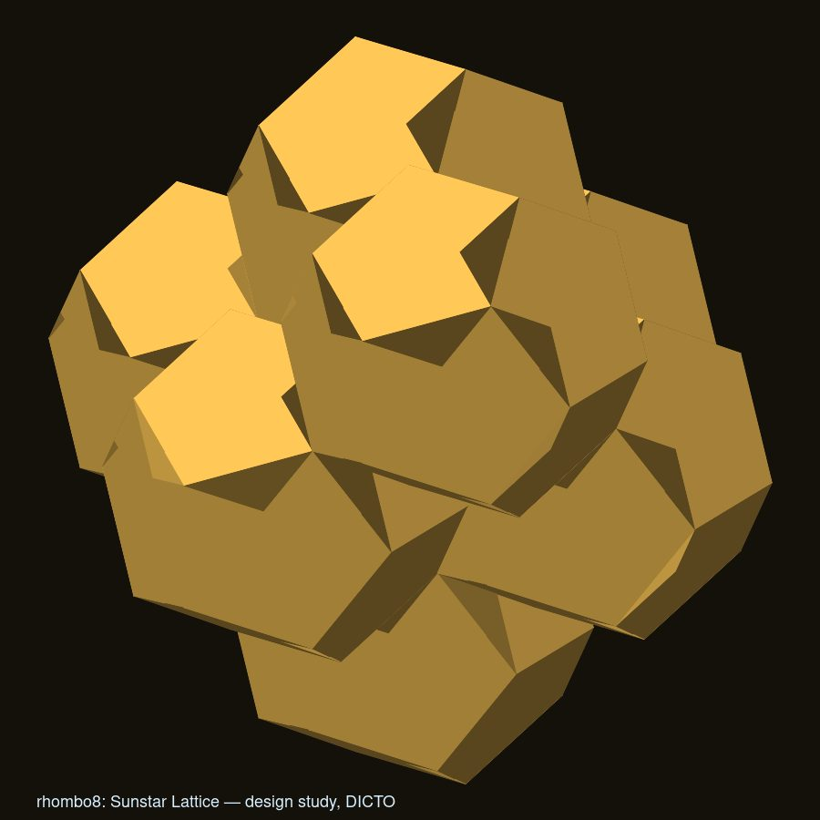
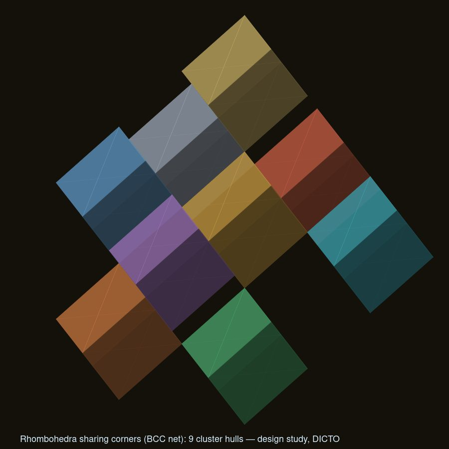
A hull with n corners sits on a network where each cluster has n neighbours: tetrahedron and diamond (4), octahedron and simple cubic (6), cube and rhombohedron and BCC (8), cuboctahedron and FCC (12), rhombic dodecahedron and BCC with its second neighbours (14). Each corner piece is the one shared with a neighbour.
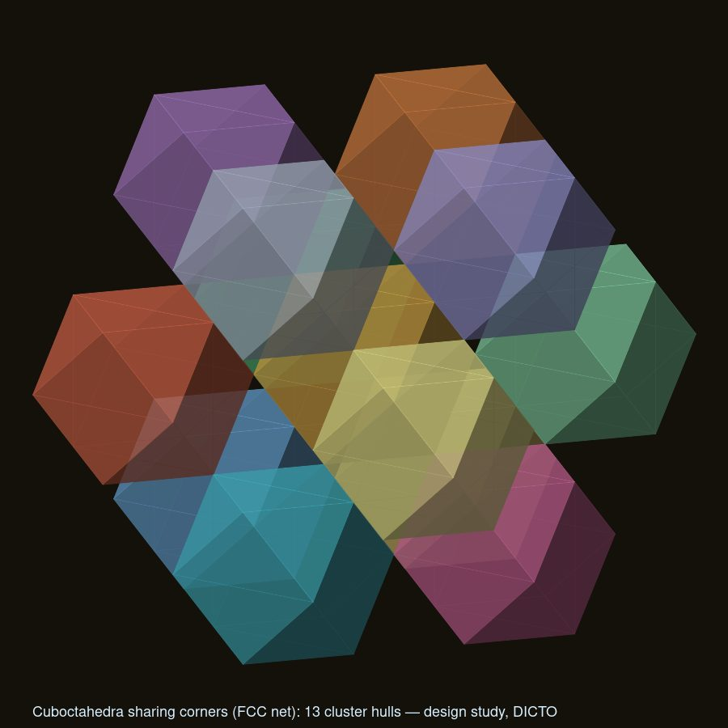
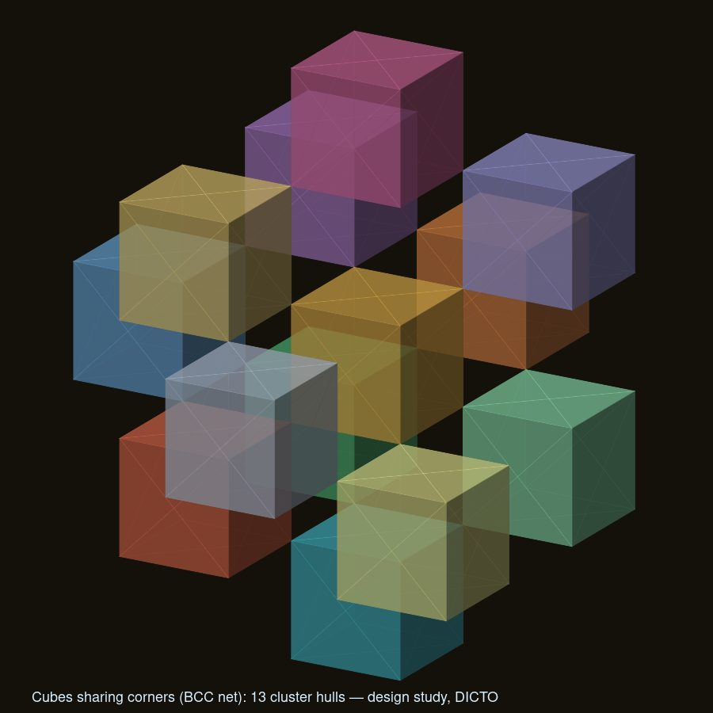
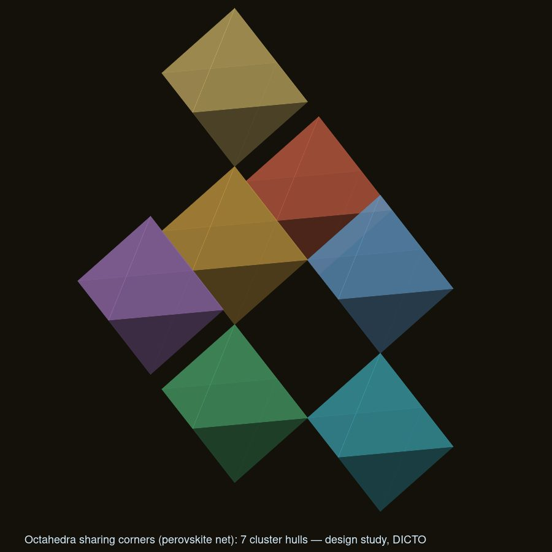
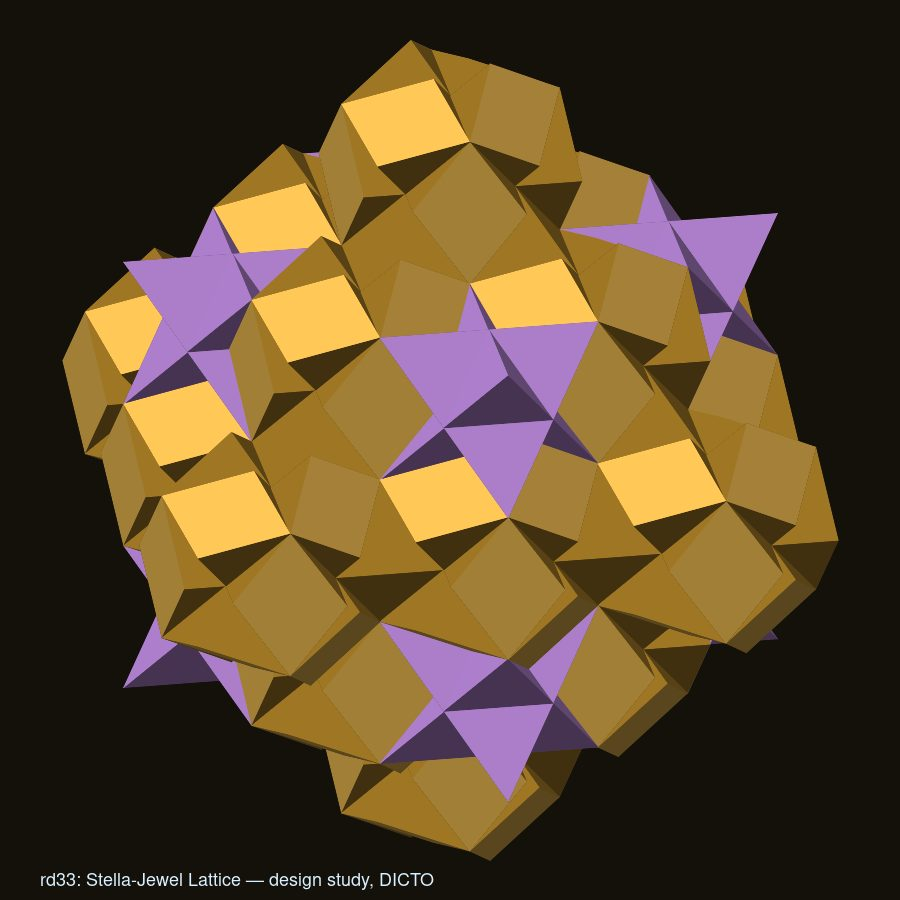
The 13-dodecahedron cluster (a regular dodecahedron with one on each face, its gaps filled; the DICTO Dodeca-13) has a hull with 12 corners, the outer dodecahedra. Clusters sharing one outer dodecahedron can meet only across opposite faces, by a shift of 4 × the inradius along a five-fold axis. Neighbours on adjacent five-fold axes (63.43° apart) always overlap; on axes 116.57° apart they never do. So a cluster has at most 3 corner-sharing neighbours (20 such sets, one per three-fold direction), and no lattice exists: every lattice generated by three five-fold shifts overlaps, and only the chain along one axis repeats. Face to face, the only repeating structure is a column of mirror-image clusters along a five-fold axis (spacing 6 × the inradius). Twelve corners, at most three neighbours, never a lattice: the rule breaks where icosahedral symmetry meets periodic space. The solid cuboctahedral hull (13 pieces, 12 neighbours, FCC) is its periodic twin. The Dodeca-13's densest stacking is body-centred cubic (density 0.71537, blocks touching only edge to edge), and the gap left is one connected labyrinth.
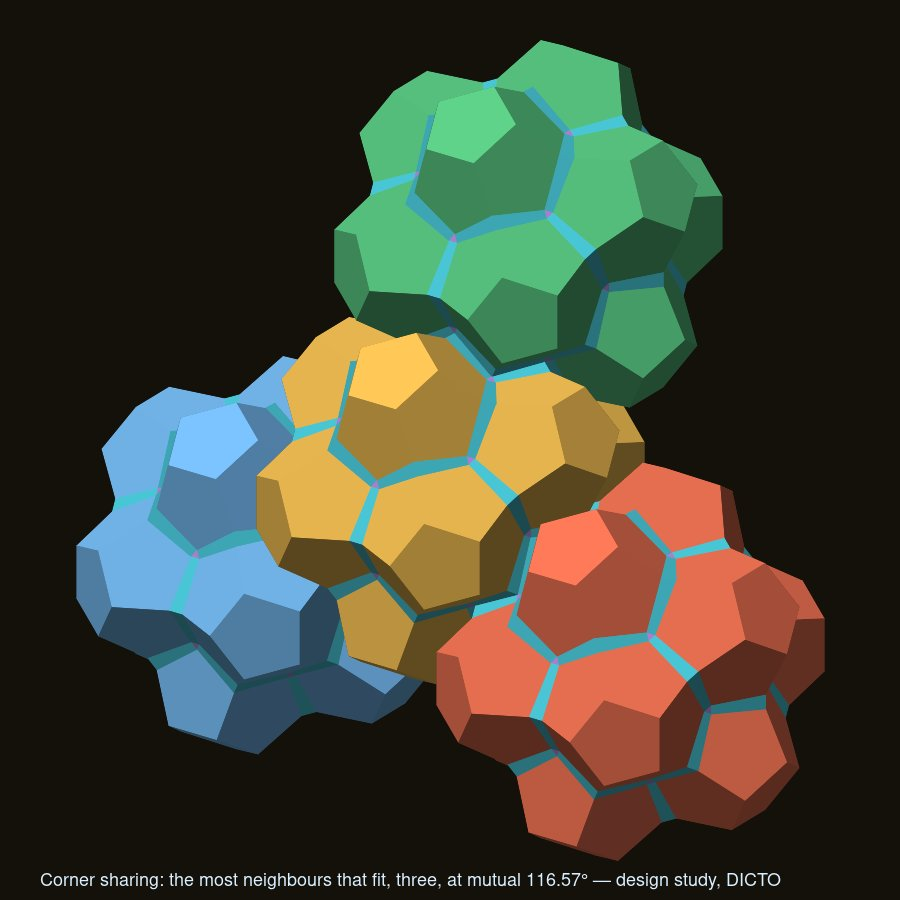
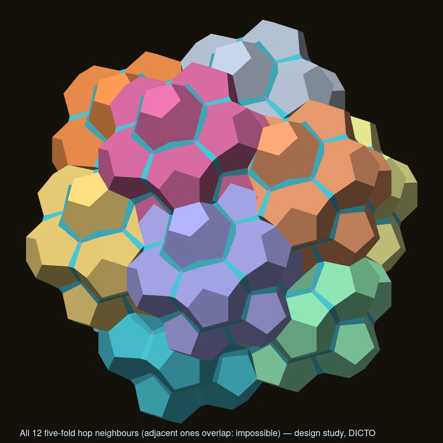
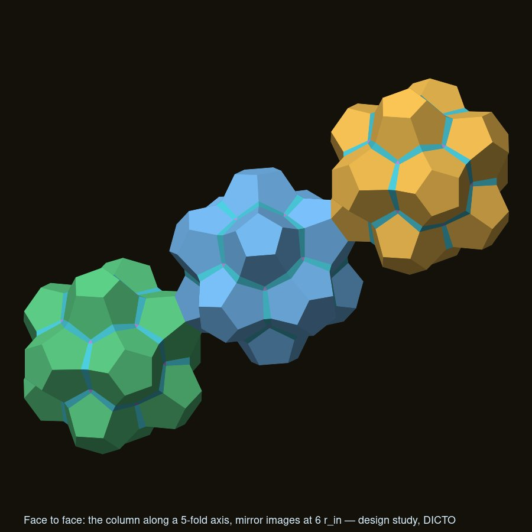
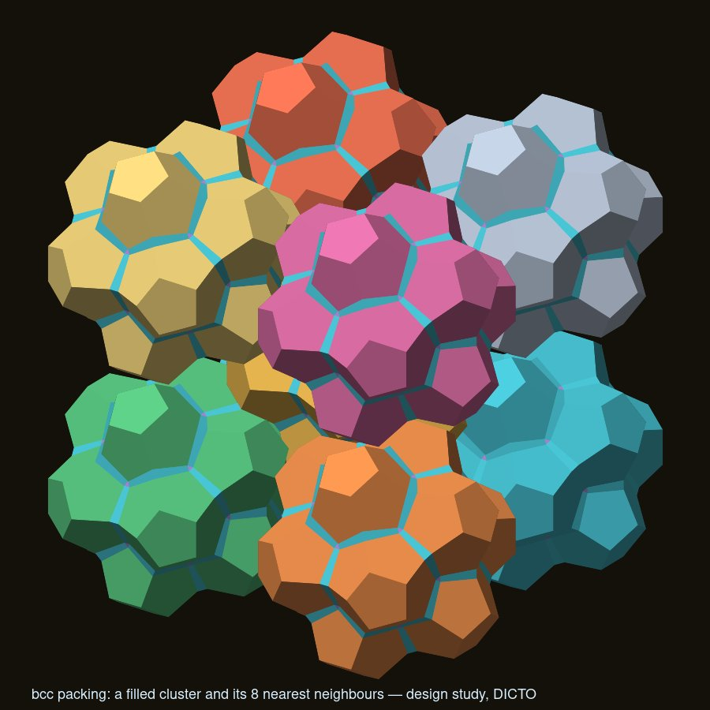
Known and credited: corner-sharing octahedra (the ReO₃ and perovskite structures); corner-sharing tetrahedra (the pyrochlore lattice, stacked Kagome layers); corner-coalesced cube nets in framework chemistry (Molecules 24(7) (2019) 1221); the FCC primitive cell as a rhombohedron (standard crystallography); the honeycomb of dodecahedra and Dogstars (Hart 1996; Walser); the 10.3° frustration of three dodecahedra round an edge and Mackay-type icosahedral clusters. Not found (web search, 2026-10-09): the rhombohedral, cuboctahedral and rhombic-dodecahedral nets as regroupings of a space filling; the clusters of DICTO Jewels and of dodecahedra; the rule across the six hulls; the icosahedral exception. The clusters rest on the DICTO Jewel, which itself was not found. This is not proof of novelty, and this record makes no claim of priority.
Included: data/, each hull in both lattices as a closed solid (vertices, faces, pieces with exact volumes; raw scale, cube edge 2 per cell, and unit scale) and each network's anchors and shares; data/checks-kagome-hulls.txt (18 checks: each solid closed with the exact volume of its pieces in both lattices; each network Kagome-style, no cell in more than two clusters and no two sharing more than one) and data/checks-dicto-jewel-cluster.txt (25 checks on the tetrahedral and octahedral Jewel clusters and their networks), from krp-core v0.14.0. The design study also checked overlap, winding and Euler characteristic on a 13³ window. All six hulls can be explored in the Stella–Jewel and Sunstar worlds of Kaleidohedra (https://kaleidohedra.dictospheres.com), part of DICTO's open-source apps (concept DOI 10.5281/zenodo.23173809; previously archived there as version 10.5281/zenodo.23262227).